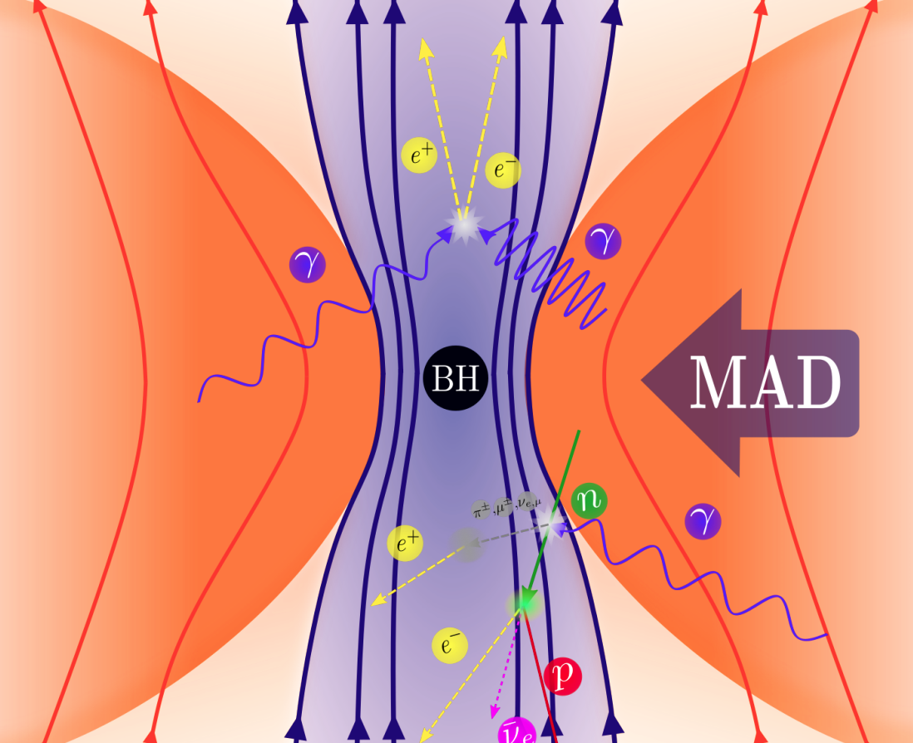
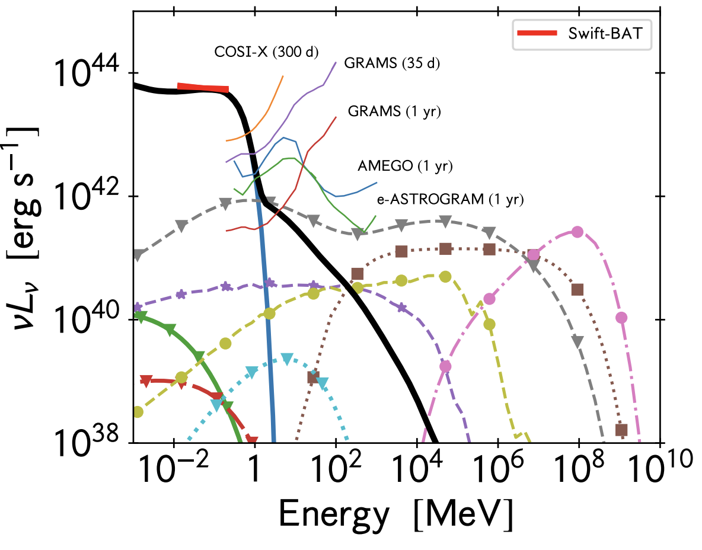

Nonthermal processes in hot accretion flows


Hot accretion flows, also known as radiatively inefficient accretion flows (RIAFs), are optically thin and geometrically thick inflows onto compact objects, characterized by low densities and very low radiative efficiencies. In these systems, most of the gravitational energy released by accretion is not radiated away, but rather advected into the compact object or carried off by outflows and jets. RIAFs are widely believed to power low-luminosity active galactic nuclei (LLAGN) such as Sgr A* and M87*, as well as the hard and quiescent states of X-ray binaries.
Because of their low densities and high temperatures, Coulomb collisions between particles are inefficient at establishing thermal equilibrium. As a result, the electron and ion populations can have distinct temperatures and may develop a nonthermal component through various plasma processes, such as magnetic reconnection, shocks, and turbulence. The presence of a nonthermal populations significantly alters the emitted spectrum, affecting both the shape and variability of the radiation across the electromagnetic spectrum. These populations of nonthermal particles may also produce copious amounts of neutrinos, making RIAF promising multimessenger sources.
I study how particle acceleration, cooling, and transport modify the radiation from the innermost regions around black holes, and what observational signatures can these processes reveal.